Dans les chapitres 474 et 475 de Dragon Ball, Goku révèle sa transformation en Super Saiyan 3 face à Gros Buu. Le combat qui s'ensuit est souvent lu comme un affrontement équilibré, preuve que les deux combattants se valent. Cette lecture est incorrecte. Ce que Toriyama construit ici est une mise en scène d'intention : une égalité de surface qui dissimule un déséquilibre narratif profond — et dont le retcon ultérieur ne fait que révéler la fragilité.
La double focale narrative
Le combat s'ouvre sur un moment d'éclat pur. Goku dévoile le Super Saiyan 3 pour la première fois dans le manga : cheveux longs, aura électrique, présence spectrale. Narrativement, le dispositif est identique à celui du SSJ1 sur Namek. Toriyama ne présente pas une transformation — il crée une icône. L'objectif est de subjuguer le lecteur, d'imprimer une image. Goku cogne, projette, tourbillonne Buu dans tous les sens. La narration insiste sur son contrôle.
Mais dès le chapitre suivant, le titre change de cible : « Majin Boo dévoile sa vraie valeur ». Ce n'est plus la mise en scène de Goku — c'est celle de Buu. Ce glissement de perspective dans le titre de chapitre est une indication de premier plan. Au sens du 2e cercle de lecture, ce basculement révèle l'intention de l'auteur : le moment d'icône est terminé, place à l'évaluation réelle de l'adversaire.
L'équilibre trompeur
Une fois le rideau du SSJ3 tiré, les échanges se rééquilibrent — en apparence. Goku frappe fort, Buu encaisse, se déforme, régénère, et contre. Le commentaire d'un personnage observateur résume l'essentiel : « Il n'est presque pas blessé. » Chaque coup de Goku est absorbé par la régénération. Aucun n'entame Buu durablement.
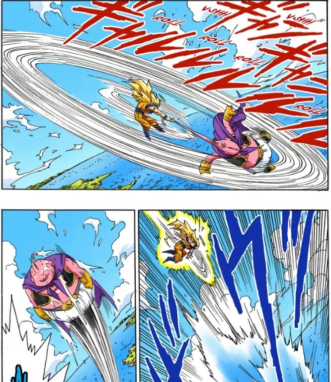
Plus révélateur encore : Buu commence à copier les techniques des adversaires qu'il a absorbés — dont une attaque de Vegeta. Un personnage le note explicitement : « Il lui suffit de se battre contre quelqu'un pour assimiler ses techniques. » C'est Buu qui progresse dans l'échange, pas Goku. Le héros livre des frappes ; l'adversaire en tire des informations.
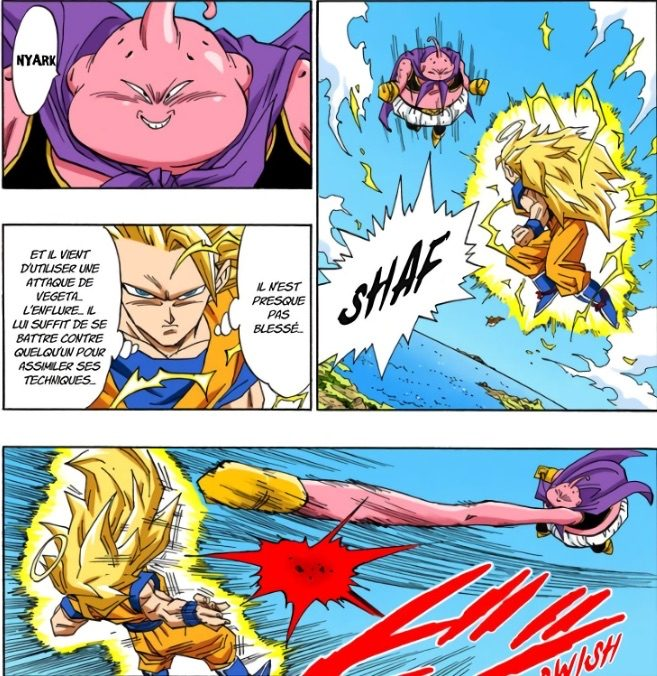
Surtout, Buu s'amuse. Il ne montre aucune frustration, aucune tension, aucune mobilisation particulière. Il joue, comme un chat avec une souris. L'indicateur émotionnel du combat penche entièrement d'un côté : c'est Goku qui encaisse les surprises, pas Buu.
Un combattant qui s'amuse est un combattant qui n'est pas challengé. Cette réaction de Buu, dans un affrontement supposément équilibré, est la donnée la plus claire que le manga fournit sur le véritable rapport de force.
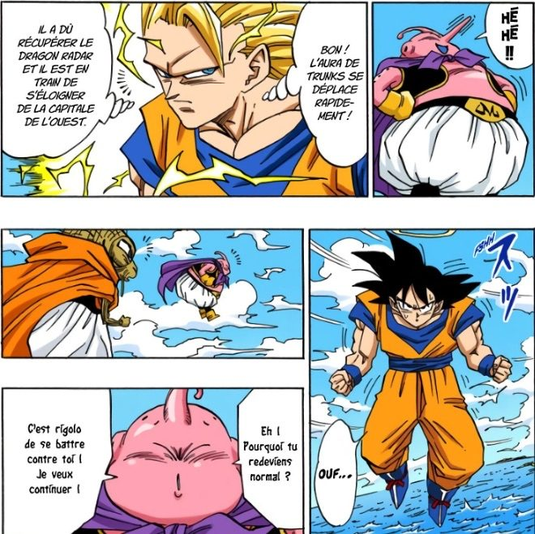
Parallèlement, le Kaioshin des temps anciens intervient pour interrompre Goku : continuer à utiliser le SSJ3 dans le monde des vivants consomme une quantité d'énergie disproportionnée. Cette contrainte est inscrite explicitement dans le manga — elle n'est pas une justification après coup. Goku ne dispose pas d'un horizon illimité. La transformation SSJ3 est un feu d'artifice à durée déterminée.
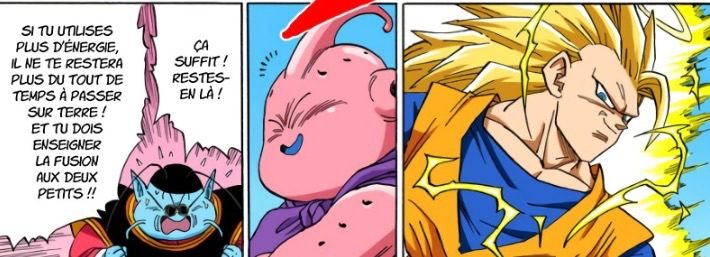
Fig. 2 — Dynamique du combat : Goku SSJ3 vs Gros Buu · Progression en cinq phases
Le débrief intégré — Piccolo comme voix du lecteur
Après le combat, Piccolo pose les questions que tout lecteur a en tête. Cette scène n'est pas un épilogue neutre : c'est un dispositif narratif délibéré. Piccolo est le proxy du lecteur ; Goku est l'auteur qui parle à travers son personnage.
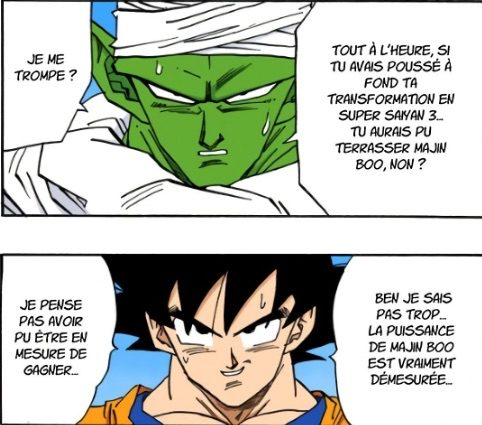
Goku : « Je pense pas avoir pu être en mesure de gagner... Ben je sais pas trop... La puissance de Majin Boo est vraiment démesurée... » Chapitres 476-477
Mais le débrief ne s'arrête pas là. Goku révèle ce qu'il a dit à Buu avant de partir — et la réaction de l'adversaire éclaire encore davantage l'état réel des forces en présence.
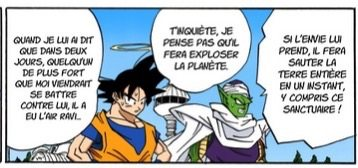
Ce détail est décisif. Goku n'exprime pas seulement une incertitude personnelle — il a lui-même reconnu à voix haute, face à l'adversaire, qu'un combattant plus fort que lui existait. Et Buu n'a pas réagi avec crainte : il semblait content. Un adversaire qu'un SSJ3 aurait pu vaincre n'accueille pas cette promesse avec enthousiasme. La réaction de Buu confirme, émotionnellement, ce que Goku venait d'exprimer sous forme d'incertitude. Celui qui surpassera Goku, c'est Gotenks — la fusion de Goten et Trunks, la réponse narrative que Toriyama avait préparée pour conclure cet arc.
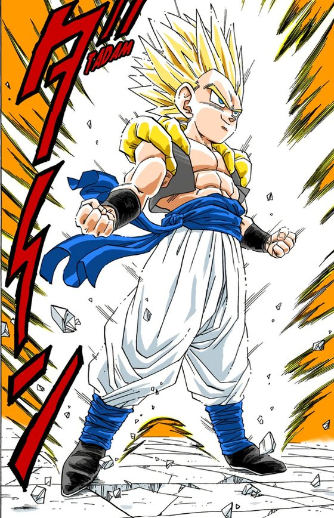
La formulation de Goku mérite une attention précise. Il ne dit pas « non, impossible » — ce qui serait une affirmation sur un état de fait non vérifié, puisque le combat n'est pas allé à son terme. Il dit « je ne pense pas avoir pu ». C'est la réponse honnête d'un combattant qui n'a pas la certitude d'une issue qu'il n'a pas vécue. Un combat inachevé ne peut produire qu'une impression, pas un verdict absolu.
Et cette impression, Goku la formule clairement : « La puissance de Majin Boo est vraiment démesurée. » C'est une reconnaissance du déséquilibre, non une revendication d'égalité. L'auteur, parlant à travers son héros, oriente la lecture : le SSJ3 n'était pas suffisant.
Goku ajoute la raison pour laquelle il s'est arrêté : sa transformation dans le monde des vivants épuise son énergie à un rythme insoutenable. Et plus profondément — ce n'est plus son combat. La jeune génération doit prendre le relais.
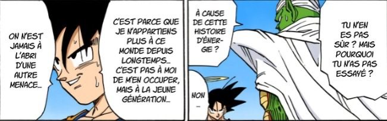
La logique du passage de flambeau — Arc Cell vs Arc Buu
Pour comprendre ce que Toriyama avait prévu pour l'arc Buu, il faut lire l'arc Cell comme modèle. Les deux arcs partagent la même structure narrative de départ : Goku, qui ne peut pas vaincre le grand méchant lui-même, passe le flambeau à la génération suivante.
Goku s'efface, Gohan conclut
Goku affronte Cell, reconnaît sa supériorité, s'arrête de lui-même et désigne Gohan. Depuis l'au-delà, il guide son fils spirituellement. Gohan délivre le coup final. La transmission est complète, cohérente, irréversible.
Goku amorce, puis revient
Goku affronte Gros Buu, reconnaît ne pas pouvoir gagner, passe le flambeau aux jeunes. Mais plus tard, il revient en héros et conclut l'arc lui-même. Le retcon « j'aurais pu » invalide rétroactivement la transmission.
Dans l'arc Cell, la cohérence narrative tient parce que Toriyama va jusqu'au bout de sa logique. Goku est mort — son rôle est celui d'un mentor spectral, pas d'un sauveur. Ce rôle de mentor depuis l'au-delà (transmission technique du Kamehameha, encouragements au moment décisif) est exactement ce qu'il était censé être dans l'arc Buu.
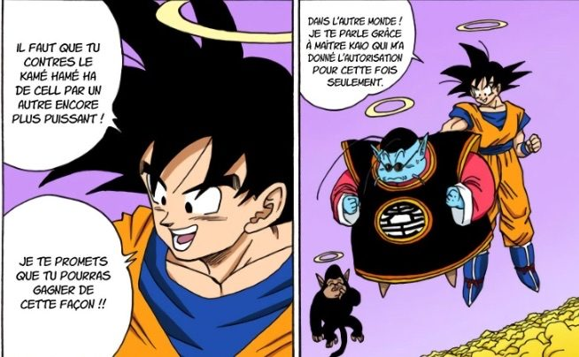
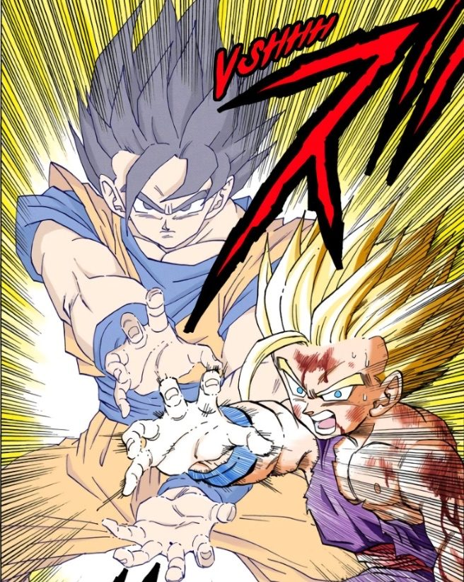
L'arc Buu initial est construit sur cette même prémisse. Goku est mort. Il revient brièvement avec une autorisation exceptionnelle de Kaio. Il montre SSJ3, il évalue Buu, il reconnaît sa limite. Il informe les jeunes du chemin à suivre — la fusion. Puis il repart. C'est cohérent.
Le problème surgit plus tard, quand Toriyama change de cap et décide que Goku sera finalement le héros de la conclusion. Pour justifier ce retournement sans détruire la cohérence du combat avec Gros Buu, il ajoute la réplique qui va produire une fracture.
Le retcon et ses conséquences
La réplique est connue. Bien plus tard dans l'arc, Goku SSJ1 déclare à son fils :
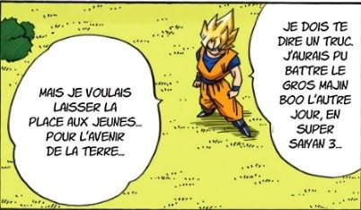
Posons la question précisément : que s'est-il passé entre la scène A et la scène B ?
Scène A — Chapitre 476-477, le débrief immédiat. Goku sort du combat. Il transpire. Piccolo lui tend la perche — « tu aurais pu le terrasser, non ? » — et Goku hésite, bafouille, dit littéralement « je pense pas avoir pu être en mesure de gagner... je sais pas trop... » Ce n'est pas la formulation d'un combattant qui a délibérément retenu sa frappe. C'est celle de quelqu'un qui a mesuré l'écart et qui n'est pas sûr.
Scène B — La réplique retcon. Goku déclare, sans hésitation, qu'il aurait pu battre Gros Buu. Affirmation nette, sans conditionnel flou, sans marge de doute.
Entre ces deux scènes, il n'y a aucun événement dans le manga qui puisse expliquer ce changement de certitude. Pas de second combat contre Gros Buu. Pas de révélation sur les limites de l'ennemi. Pas d'analyse de Kaioshin sur le niveau de puissance en jeu. Pas de moment où Goku réévalue rétroactivement ce qu'il a vécu. Rien. Le manga n'offre aucune information nouvelle entre le moment où Goku dit « je sais pas trop » et celui où il dit « j'aurais pu ».
Ce vide crée une impossibilité logique. Soit Goku mentait dans la scène A — ce qui est incompatible avec son personnage, celui qui ne dissimule jamais ses sentiments à Piccolo ou à ses proches. Soit quelque chose s'est produit hors-champ, hors-texte, dans un espace que le manga ne montre pas — ce qui revient à postuler une information que le récit lui-même refuse de valider. Soit, enfin, la déclaration de la scène B n'émerge pas de la logique narrative : elle est posée par l'auteur pour justifier rétroactivement une décision scénaristique que le combat n'avait pas préparée.
C'est précisément ce que la thèse adverse — le filet narratif — tente de colmater : en supposant que Goku dissimulait une réserve de puissance SSJ3 dans le combat, on peut réconcilier les deux scènes. Mais cette supposition ne repose sur aucune case du manga. Elle est une prémisse non montrée introduite pour sauver une conclusion qui ne tient pas sans elle. Et dans l'analyse textuelle, une prémisse non montrée n'a pas de valeur de preuve — elle a la valeur d'une pétition de principe.
C'est ici que le récit se grippe. Cette déclaration est un retcon au sens précis du terme : elle réécrit rétroactivement ce que le texte avait établi, non en ajoutant un détail manquant, mais en contredisant le sens de ce qui avait été montré.
Le premier problème est narratif. Si Goku pouvait battre Gros Buu mais choisissait de ne pas le faire pour laisser la place aux jeunes, alors tout l'arc Buu devient une absurdité. Pendant que Buu massacre des milliards de personnes, que Gohan se fait écraser, que Vegeta se sacrifie, Goku dispose d'une solution et préfère observer. Ce n'est pas un passage de flambeau héroïque — c'est une inaction morale. La réplique transforme Goku en spectateur qui laisse l'humanité dans la catastrophe.
Ce n'était évidemment pas l'intention de Toriyama dans sa première écriture. Le testament narratif de Goku était limpide : pour terrasser Majin Buu, il faut me dépasser. Pas : j'aurais pu le faire, mais je vous laisse vous débrouiller.
Accordons à la thèse adverse son meilleur argument. Il est possible — probable, même — que Toriyama, à l'époque de l'arc Buu, n'ait pas encore décidé comment l'arc se terminerait. Le mangaka travaille souvent dans l'urgence du feuilleton, chapitre par chapitre, sans plan global verrouillé. En ne tuant pas Goku de façon permanente, en le maintenant disponible dans un statut ambigu (mort certes, mais convoquable), Toriyama s'est ménagé une porte de sortie. Si les lecteurs avaient mal reçu la nouvelle génération, si l'éditeur avait exigé un retour de Goku, il restait joignable.
C'est ce que nous appellerons la porte ouverte : une hésitation d'auteur, délibérément codée dans la structure narrative pour préserver des options. Elle est réelle. Elle est observable. Et il serait malhonnête de la nier.
Mais voici la distinction décisive : la porte ouverte explique pourquoi le retcon était praticable. Elle n'explique pas pourquoi il est cohérent.
Raisonnons par contrefactuel. Imaginons que l'arc se soit déroulé comme son élan narratif le laissait attendre : Gotenks SSJ3 et Gohan Mystic auraient conclu le combat contre Buu, sans que Goku n'intervienne à nouveau. Dans ce cas, il n'y aurait eu aucun retcon. Et la lecture que défend cet article — Goku SSJ3 ne pouvait pas vaincre Gros Buu — aurait été la lecture unanimement validée par l'histoire elle-même.
La porte ouverte n'aurait jamais été franchie. Elle aurait simplement été fermée de l'intérieur, sans bruit.
Or, qu'est-ce que le retcon change dans cette équation ? Il franchit la porte. Mais franchir une porte qui existait ne la rend pas moins une sortie de secours activée sous pression. Ce n'est pas parce qu'un couloir de dégagement a été ménagé dans un bâtiment que tout le monde prévoyait d'y passer. L'existence de la porte ne valide pas la clé qu'on y glisse après coup.
Comparons avec le contre-exemple le plus solide que possède Dragon Ball : le combat de Goku contre Perfect Cell. Là aussi, Goku renonce. Mais les deux renoncements n'ont pas la même texture narrative.
Face à Cell, Goku se retire consciemment, avec la sérénité de celui qui a tout pesé. Il ne bafouille pas. Il ne dit pas « je pense pas avoir pu être en mesure de gagner ». Il dit à Gohan, en substance : tu es plus fort que moi, c'est à toi de le faire. Ce n'est pas de l'incertitude — c'est une passation de flambeau délibérée, pleinement assumée, lisible comme telle. L'auteur a voulu que ça soit clair, et c'est clair.
Face à Gros Buu, Goku bafouille. Il conjugue au conditionnel passé (« j'pense pas avoir pu être en mesure de gagner »). Il mesure des probabilités. L'hésitation n'est pas une posture de maître zen qui se retire — c'est l'aveu d'un combattant qui n'est pas sûr d'avoir le niveau. La différence de registre est totale.
| Élément | Goku vs Cell (chap. 388–389) | Goku vs Gros Buu (chap. 476–477) |
|---|---|---|
| Registre du renoncement | Délibéré, serein, assumé | Hésitant, conditionnel, incertain |
| Formulation | « Tu es plus fort » (affirmatif) | « J'pense pas avoir pu… » (conditionnel passé) |
| Ce que le lecteur comprend | Goku sait qu'il perdrait | Goku pense qu'il perdrait probablement |
| Type de passation | Passation narrative planifiée | Retrait sous incertitude → retcon ultérieur |
La conclusion s'impose d'elle-même. L'hésitation de Toriyama — la porte ouverte — explique comment le retcon a pu être inséré sans déclencher une rupture de contrat narrative immédiate. Elle ne dit pas que le retcon émerge d'une logique interne au récit. La praticabilité d'une révision n'est pas sa légitimité.
Une sortie de secours activée après coup reste une sortie de secours. Ce n'est pas le plan d'évacuation prévu.
Le second problème est technique, et il est peut-être encore plus fatal. Admettons un instant que le retcon soit exact — que SSJ3 Goku puisse vaincre Gros Buu. Le niveau de Gros Buu est approximativement comparable à celui de Kid Buu (les deux arcs du même personnage). Or, que se passe-t-il lors du combat contre Kid Buu ?
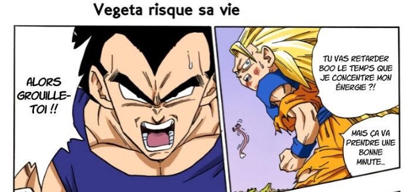
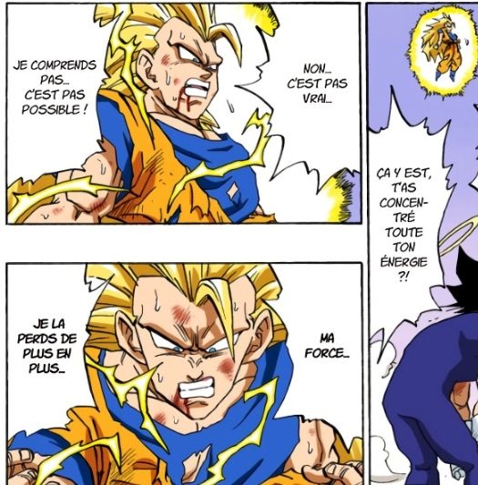
C'est là le paradoxe du retcon : en voulant rehausser Goku, il crée une incohérence dans les deux directions. Il le rend soit moralement défaillant (il pouvait agir et ne l'a pas fait), soit techniquement impossible (les conditions d'une victoire n'existaient pas).
Fig. 1 — Structure narrative comparée : Arc Cell vs Arc Buu
Une mise en scène, pas une égalité
Le combat Goku SSJ3 vs Gros Buu n'est pas une égalité. C'est une mise en scène d'intention construite sur deux temps : d'abord l'icône (présentation du SSJ3, domination initiale), puis la révélation (Buu qui joue, Buu qui absorbe, Buu qui s'impatiente d'un adversaire plus fort). Toriyama orchestre les deux niveaux avec soin : Goku sort grandi visuellement, mais la narration profonde indique sans ambiguïté que le Super Saiyan 3 n'est pas une solution à la hauteur de Gros Buu.
Le débrief avec Piccolo confirme cette lecture par la voix même du héros. Et la contrainte d'énergie du SSJ3 dans le monde des vivants ancre cette limite dans la mécanique narrative du manga.
Le retcon ultérieur tente de corriger cette lecture sans en assumer les conséquences. Il échoue sur les deux fronts : narrativement (Goku qui peut agir et s'abstient est un héros moralement incohérent), et techniquement (les conditions d'une victoire sur Gros Buu n'existaient pas, comme le démontre par comparaison le combat contre Kid Buu). Il ne tient que si l'on accepte un postulat — la rétention de puissance de Goku — que le manga ne confirme à aucun moment.
Ce que Toriyama avait écrit avec l'arc Cell — un héros qui passe le flambeau et ne revient pas en arrière — était narrativement solide. Le retcon de l'arc Buu n'améliore pas ce qu'il réécrit. Il expose la couture.